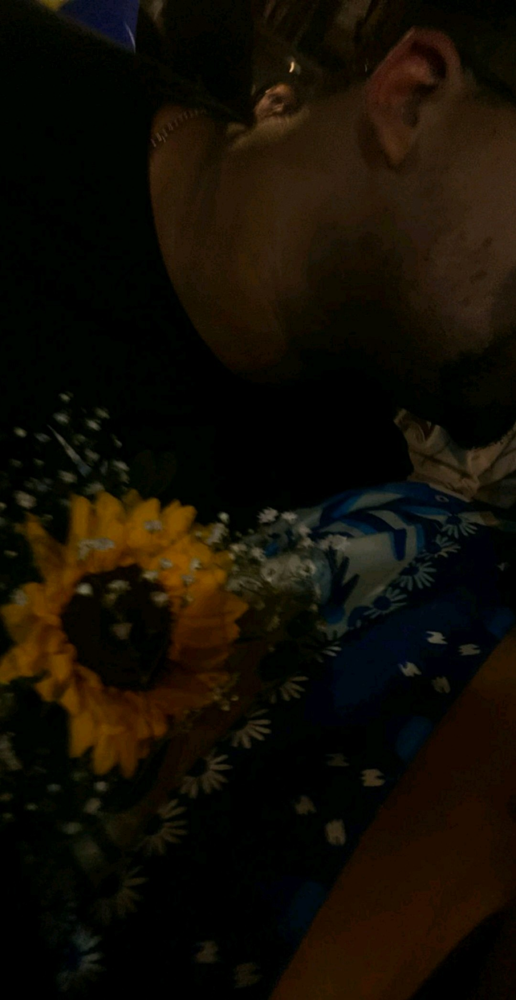
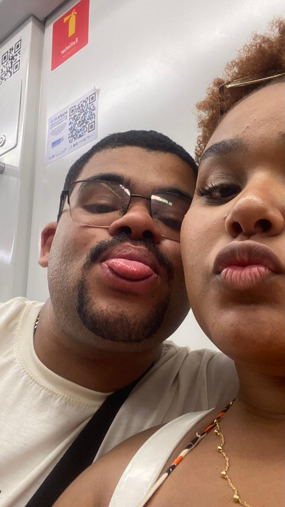
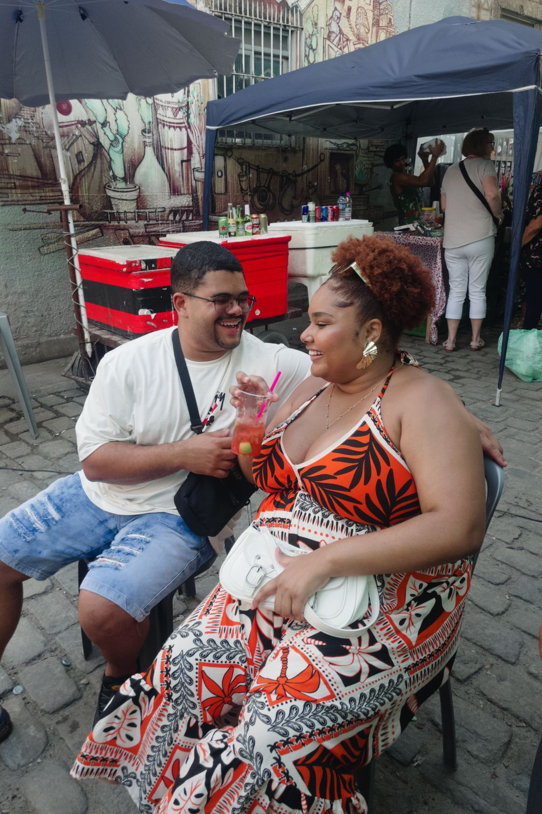
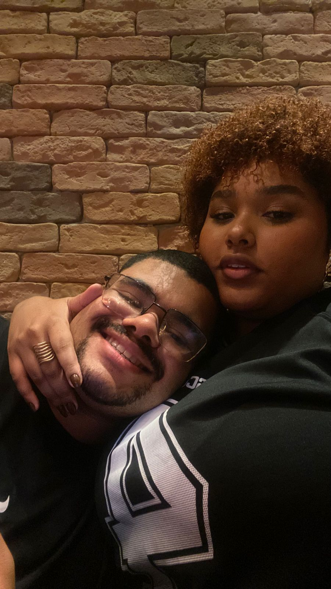
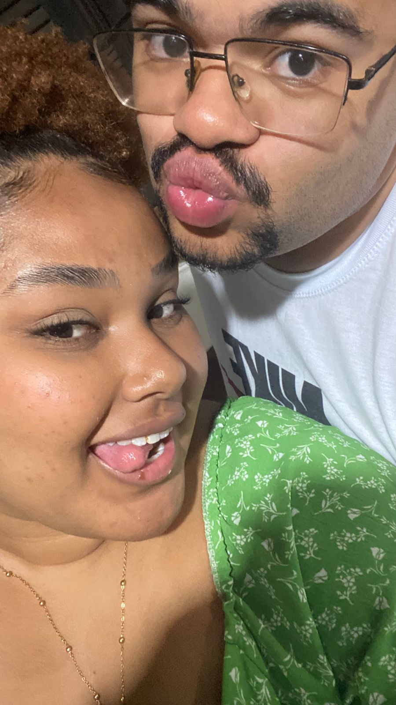
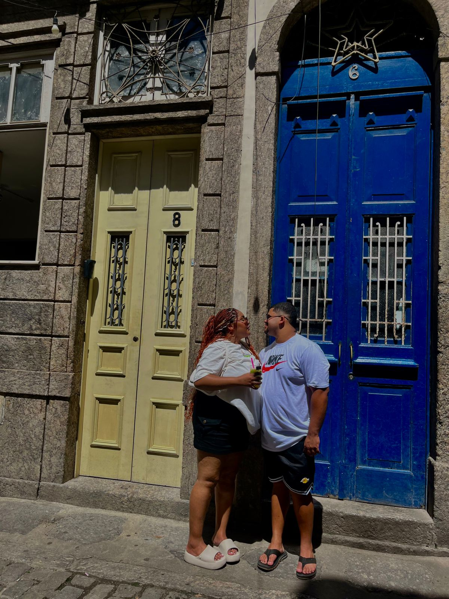
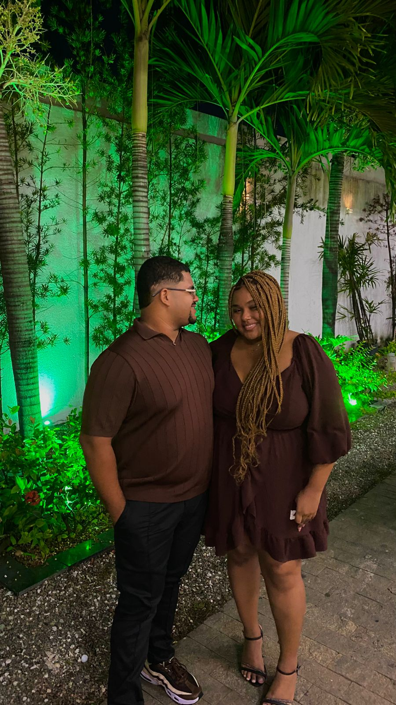
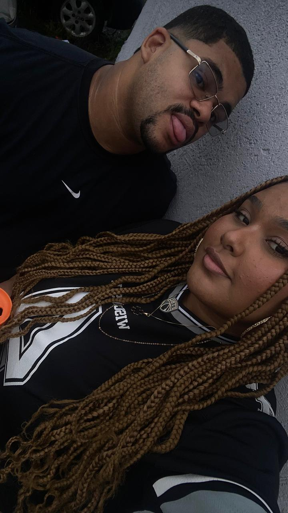
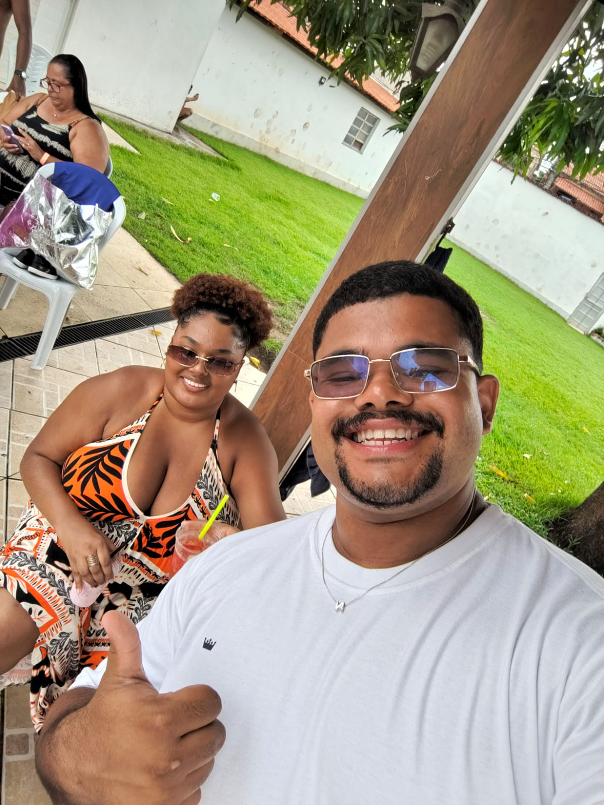
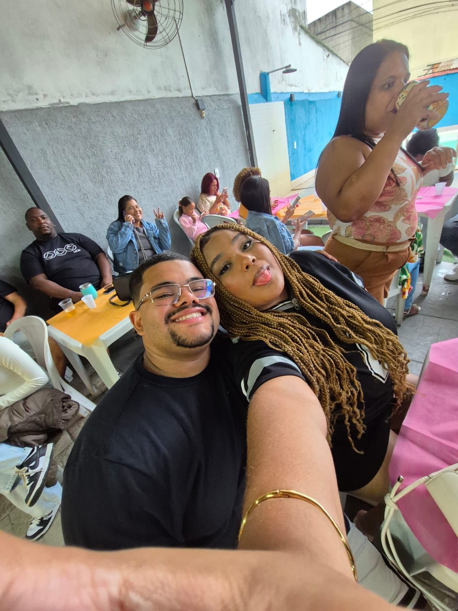

NOSSA HISTÓRIA
♡
Você & Eu
Talvez a gente não soubesse naquele momento, mas ali começava uma história que mudaria nossas vidas.

Talvez a gente não soubesse naquele momento, mas ali começava uma história que mudaria tudo.

Cada conversa, cada sorriso e cada momento fazia nossa história ficar ainda mais especial.

Aos poucos, fomos criando nossas próprias lembranças, aquelas que eu nunca quero esquecer.

E quanto mais tempo passava, mais eu percebia o quanto você era especial para mim.

Sem perceber, aqueles pequenos momentos começaram a significar tudo para mim.

Existem momentos que parecem simples, mas que acabam guardados para sempre no coração.

E foi assim que, pouco a pouco, você passou a fazer parte de tudo que eu imaginava para o meu futuro.

Duas pessoas, vários momentos, muitas histórias e um sentimento que só cresceu.

1 ano de nós
Hoje completamos 1 ano juntos… e, sinceramente, eu até parei aqui sem saber exatamente o que dizer, porque parece que nenhuma palavra consegue explicar tudo o que eu sinto por você. Quero começar te agradecendo por ter entrado na minha vida e por ter mudado tanta coisa em mim. Você abriu minha cabeça para o futuro, me fez enxergar que eu precisava ter um rumo e me incentivou a buscar algo melhor para a minha vida. Talvez você nem tenha ideia do quanto isso significa para mim. Com você, eu me sinto o homem mais sortudo do mundo. Eu realmente te amo muito e quero estar ao seu lado pelo resto da minha vida. Você se tornou uma das maiores razões pelas quais eu acordo todos os dias querendo correr atrás dos meus objetivos. É por você que, mesmo depois de chegar cansado do trabalho, eu encontro forças para estudar e continuar tentando evoluir. Eu quero construir meu futuro, crescer profissionalmente e conquistar minhas coisas, não só por mim, mas também porque quero poder te proporcionar tudo aquilo que você merece. Quero olhar para trás um dia e saber que todo esse esforço valeu a pena e que nós construímos tudo juntos. Você consegue melhorar 100% o meu dia. Às vezes basta uma mensagem sua, um abraço, um sorriso ou simplesmente saber que tenho você comigo para tudo ficar melhor. E claro, nem tudo foram flores. Tivemos nossas brigas, nossos desentendimentos, discussões e momentos difíceis. Mas, mesmo assim, você permaneceu. E, de alguma forma, cada dificuldade também me fez enxergar meus erros, amadurecer e tentar ser uma pessoa melhor, não só por você, mas por nós dois. Eu quero continuar aprendendo, crescendo e vivendo ao seu lado. Quero comemorar muitos outros aniversários de namoro com você, viver novas experiências, realizar nossos sonhos, superar as dificuldades e, principalmente, construir uma vida juntos. Se há um ano alguém me dissesse tudo o que eu viveria ao seu lado, talvez eu nem acreditasse. Mas hoje eu só consigo agradecer por ter você na minha vida. Obrigado por me amar, por acreditar em mim, por me incentivar, por permanecer ao meu lado e por fazer parte da minha história. Eu te amo muito, mais do que consigo colocar em palavras. ❤️ Feliz 1 ano de namoro, meu amor. Que esse seja apenas o primeiro de muitos e muitos anos que ainda vamos viver juntos. ❤️🥹 Eu te escolheria hoje, amanhã e todos os dias da minha vida.